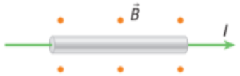
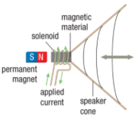

Magnetic Force on Current-Carrying Conductor
Inside a speaker is an electromagnet as well as a permanent magnet. The magnetic field of the permanent magnet exerts a force on the current in the coil of the electromagnet.
Magnetic Force and Current
An electric current consists of a collection of moving charges. We can therefore use the formula for the magnetic force on a single moving charge to determine the magnetic force on a current-carrying wire.
This force is important in many applications, including electric motors. Consider a current-carrying wire placed in an external magnetic field.

This current-carrying wire is in an external magnetic field. The magnetic field is perpendicular to the wire and is directed out of the page as indicated by the dots.
Loudspeakers
The wire coil inside the speaker is part of an electromagnet. Electrical signals corresponding to sounds produce a changing current in the coil.
The changing current produces a changing magnetic field around the coil. The permanent magnet also has a magnetic field. This field exerts a force on the current-carrying wire.

A loudspeaker changes electrical signals to sound using a permanent magnet and an electromagnet.
Electromagnetic Pumps
An understanding of the magnetic force on current enabled medical researchers to devise electromagnetic pumps to move fluids in kidneys and artificial hearts. Traditional mechanical pumps can cause damage to blood cells. The use of magnetic fields eliminates this problem.

Practice
A long, straight wire of length 1.4 m carries a current of I 5 3.5 A. A magnetic field of magnitude B 5 1.5 T is directed perpendicular to the wire.